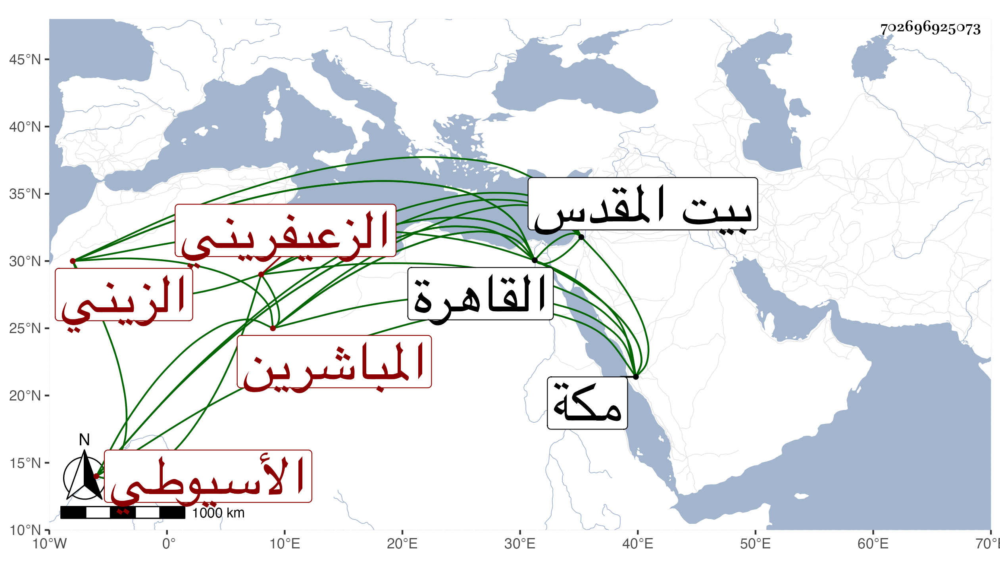

0902Sakhawi.DawLamic.ITO20230111-ara1.EIS1600.702696925073
Biography ID: 702696925073
275
أحمد بن محمد بن أحمد بن يوسف بن محمد بن معالي الشهاب أبو الفضل الزعيفريني أحد المباشرين بباب الولوي الأسيوطي ثم الزيني زكريا وسبط البدر حسن البرديني وليس بمحمود . وسيأتي جده وأبوه وأنه سمع بقراءته على العز بن الفرات شرح معاني الآثار للطحاوي وكذا سمع معه بمكة في سنة ثلاث وأربعين على التقي بن فهد وسمع بالقاهرة على الزركشي في صحيح مسلم وعلى ابن الطحان وابن بردس وابن ناظر الصاحبة والزين رضوان ، وسافر لبيت المقدس مع والده فسمع على الجمال بن جماعة والتقي أبي بكر القلقشندي وأجاز له جماعة باستدعاء أبيه وغيره . ومولده في ذي القعدة سنة ست وثلاثين بالقاهرة وحفظ المنهاج وألفية النحو وعرض على المحلى والبلقيني والمناوي والأقصرائي وآخرين .
